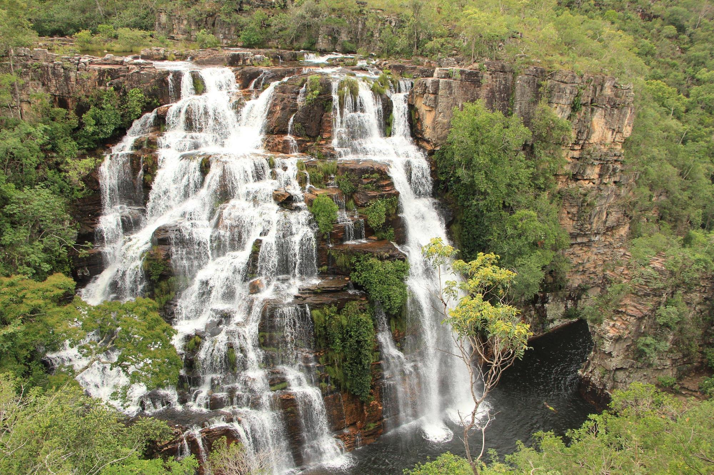
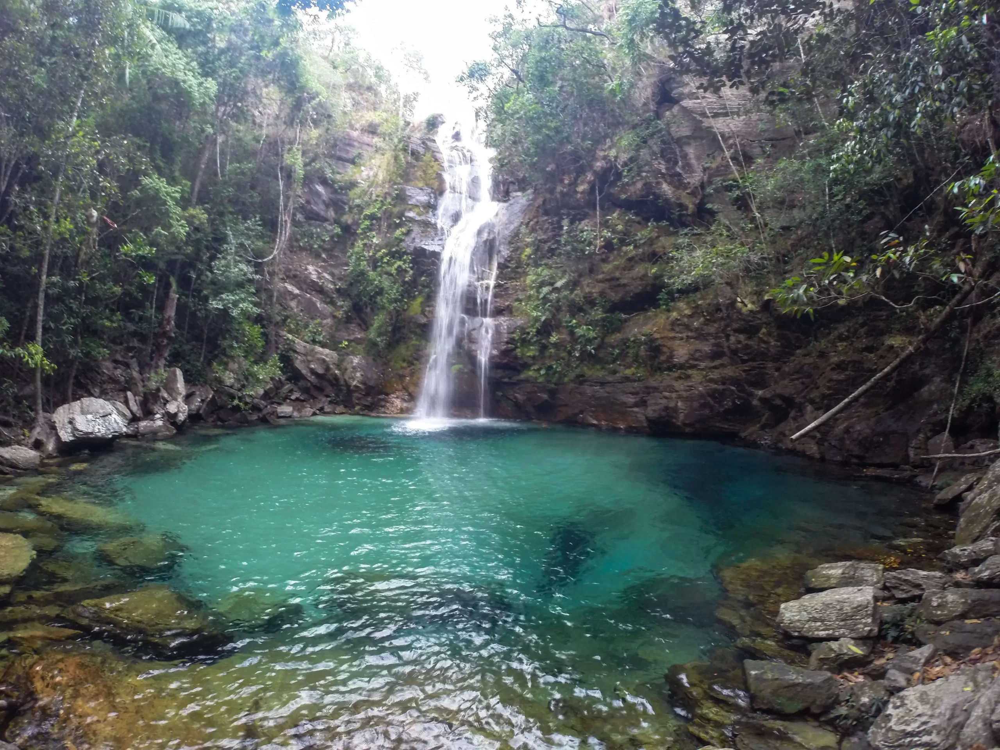
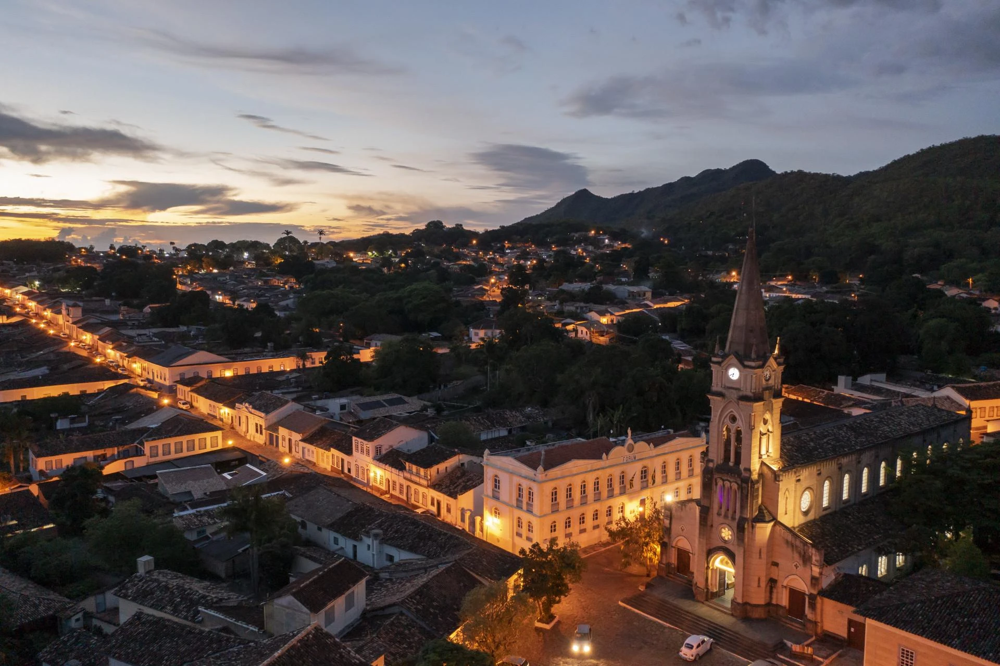
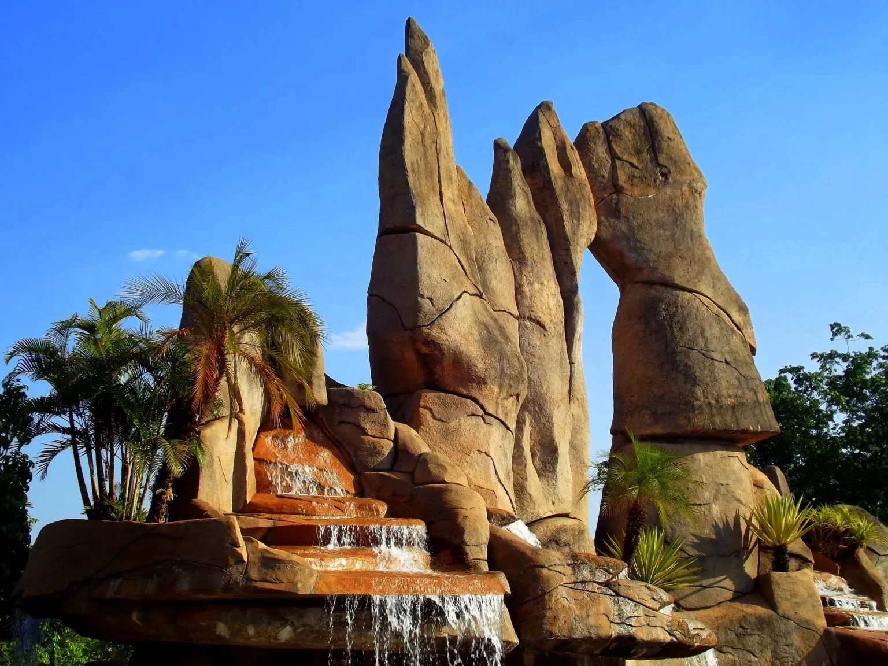
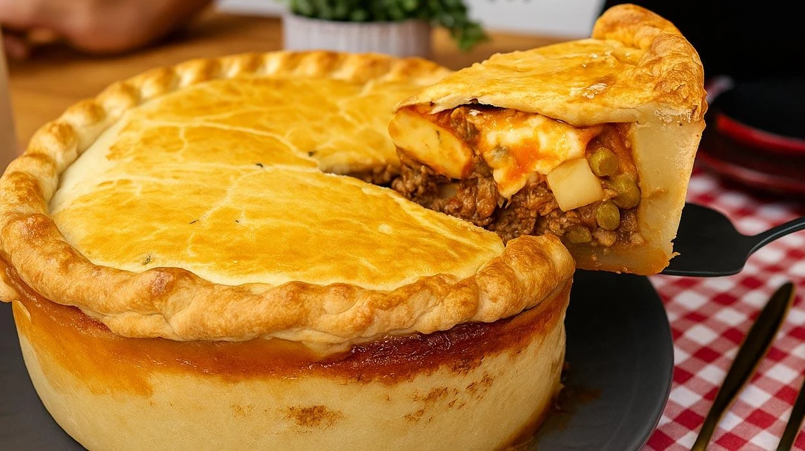

Capital
Goiânia
Conheça destinos, culturas, sabores e paisagens de todas as regiões
brasileiras.
Destinos, culturas e paisagens
incríveis te esperam.
Goiás é um estado localizado na Região Centro-Oeste do Brasil, conhecido por suas belas paisagens naturais, cidades históricas e forte tradição sertaneja. O estado possui grande importância econômica, destacando-se na agropecuária, mineração e turismo. Goiás abriga cachoeiras, chapadas, parques naturais e cidades coloniais que preservam parte importante da história brasileira.

Goiânia
Aproximadamente 340.242 km²
Cerca de 7,05 milhões de habitantes
Centro-Oeste

O Parque Nacional da Chapada dos Veadeiros é um dos destinos de ecoturismo mais famosos do país. O local reúne cachoeiras, cânions, trilhas e paisagens impressionantes do Cerrado brasileiro.

Goiás, também conhecida como Goiás Velho, foi a primeira capital do estado e preserva casarões coloniais, igrejas históricas e ruas de pedra. Seu centro histórico é reconhecido como Patrimônio Mundial pela UNESCO.

Caldas Novas é famosa por possuir a maior estância hidrotermal do mundo. Suas águas naturalmente quentes atraem milhões de turistas todos os anos.
.webp)
O arroz com pequi é um dos pratos mais tradicionais de Goiás. O pequi é um fruto típico do Cerrado e possui sabor marcante, sendo muito apreciado na culinária regional.

O empadão goiano é uma torta recheada com frango, linguiça, queijo, milho e outros ingredientes típicos. É considerado um dos símbolos gastronômicos do estado.
.webp)
A galinhada é preparada com arroz, frango e diversos temperos regionais. É um prato bastante popular em festas e encontros familiares.
Goiás possui clima tropical, com uma estação chuvosa e outra seca bem definidas. Os meses de maio a setembro costumam ser os melhores para passeios ao ar livre e trilhas.
Goiás possui clima tropical, com uma estação chuvosa e outra seca bem definidas. Os meses de maio a setembro costumam ser os melhores para passeios ao ar livre e trilhas.
A Chapada dos Veadeiros é ideal para quem busca natureza e aventura. Já a Cidade de Goiás oferece uma rica experiência histórica e cultural. Para descanso e lazer, Caldas Novas é uma das melhores opções.
A Chapada dos Veadeiros é ideal para quem busca natureza e aventura. Já a Cidade de Goiás oferece uma rica experiência histórica e cultural. Para descanso e lazer, Caldas Novas é uma das melhores opções.
A culinária goiana é fortemente influenciada pelos ingredientes do Cerrado. Não deixe de experimentar pratos preparados com pequi, além do tradicional empadão goiano e da galinhada.
A culinária goiana é fortemente influenciada pelos ingredientes do Cerrado. Não deixe de experimentar pratos preparados com pequi, além do tradicional empadão goiano e da galinhada.